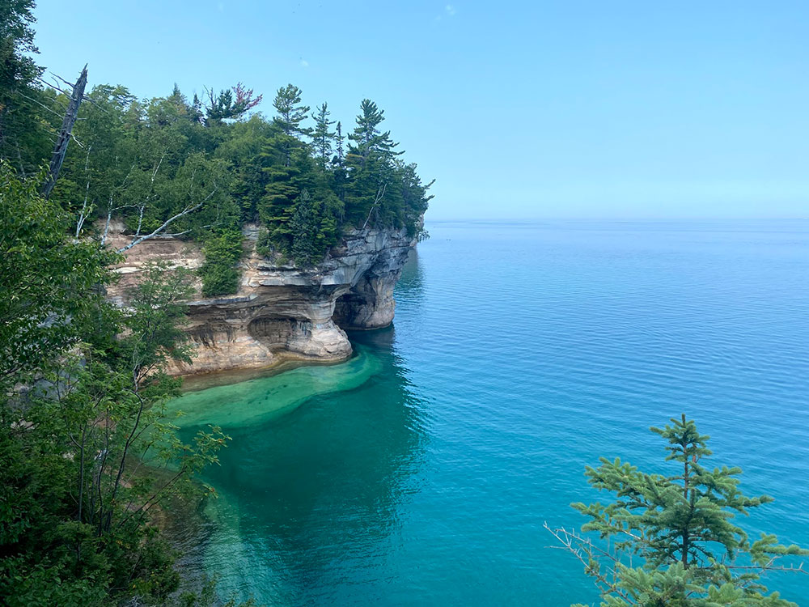
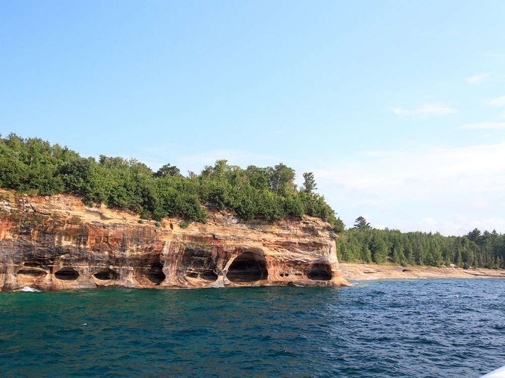
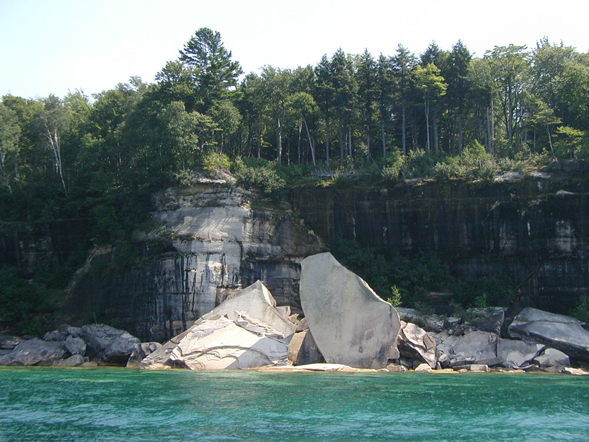
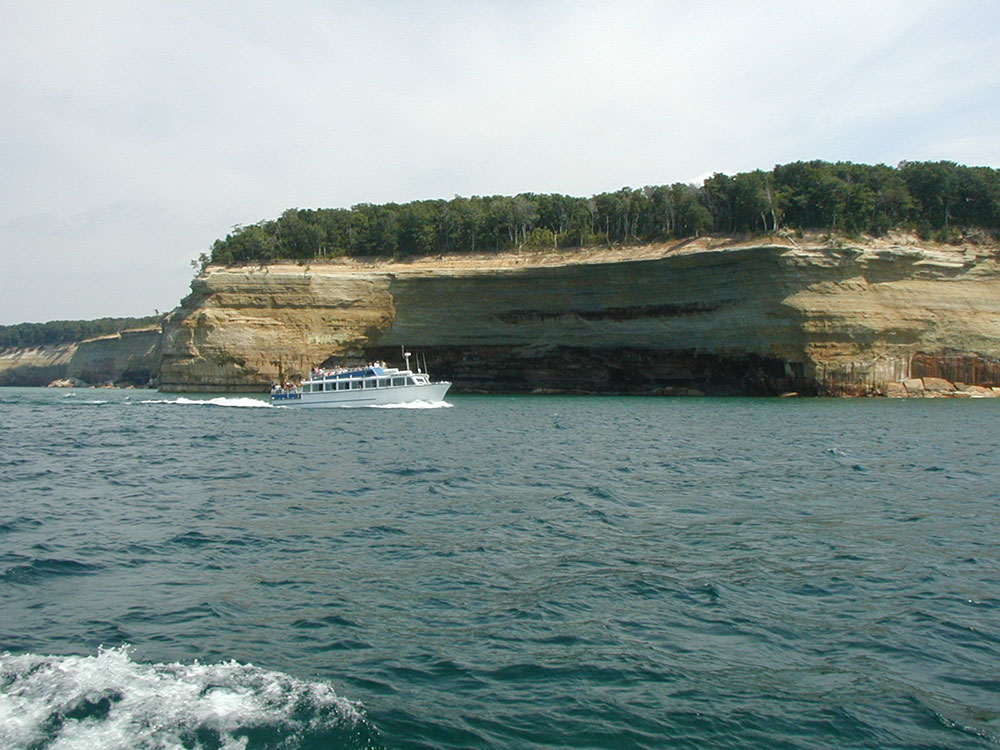

National lakeshore in the Upper Peninsula of Michigan, extending for 42 miles along the shore of Lake Superior, and has extensive views of the hilly shoreline with picturesque rock formations, waterfalls, and sand dunes
General Information
Most roads are seasonally closed during winter due to snow conditions
Visitor centers and facilities maintain separate operating hours
Motorcycle Pass (7 Days): $20
Individual Pass (Walk-in/Bicycle): $15
Pictured Rocks Annual Pass: $45
America the Beautiful Pass accepted
How to Get There
From Munising, MI (2 mi): Take M-28 east from downtown Munising and follow signs to the Munising Falls Visitor Center, the primary gateway to Pictured Rocks National Lakeshore, where visitors can access scenic overlooks, waterfalls, hiking trails, beaches, and boat tour departures.
Overview
Pictured Rocks National Lakeshore is a national lakeshore in the Upper Peninsula of Michigan. It extends for 42 miles (67 km) along the shore of Lake Superior and covers 73,236 acres (114 sq mi; 296 km2). The park has extensive views of the hilly shoreline between Munising and Grand Marais, Michigan, with picturesque rock formations, waterfalls, and sand dunes.
Pictured Rocks derives its name from the 15 miles (24 km) of colorful sandstone cliffs northeast of Munising. The cliffs reach up to 200 feet (60 m) above lake level. They have been naturally sculptured into a variety of shallow caves, arches, and formations resembling castle turrets and human profiles. Near Munising, visitors can also visit Grand Island, most of which is included in the separate Grand Island National Recreation Area.
The U.S. Congress designated Pictured Rocks the first National Lakeshore in the United States in 1966. It is governed by the National Park Service (NPS).
Things to Do
Discover Michigan's Most Spectacular Lake Superior Shoreline
Pictured Rocks National Lakeshore stretches for more than 40 miles along the southern shore of Lake Superior in Michigan's Upper Peninsula. Established as the first national lakeshore in the United States, the park is famous for its multicolored sandstone cliffs, sea caves, waterfalls, pristine beaches, sand dunes, and boreal forests. It is widely considered one of the most scenic destinations in the Great Lakes region.
See the Famous Colored Cliffs
The park's namesake cliffs rise as much as 200 feet above Lake Superior and display vibrant bands of red, orange, green, blue, black, and white mineral staining. These dramatic formations can be viewed from scenic overlooks, hiking trails, boat cruises, and kayaking excursions along the shoreline.
Take a Boat Tour or Kayak Adventure
One of the most popular ways to experience Pictured Rocks is from the water. Guided boat cruises and sea kayak tours provide spectacular views of sea caves, arches, rock formations, waterfalls, and towering cliffs that are inaccessible from land.
Visit Waterfalls and Scenic Beaches
The lakeshore contains numerous waterfalls, including Munising Falls, Miners Falls, Mosquito Falls, Chapel Falls, and Spray Falls. Visitors can also explore beautiful beaches such as Sand Point Beach, Twelvemile Beach, and Chapel Beach while enjoying Lake Superior's stunning scenery.
Enjoy Wildlife Viewing and Outdoor Recreation
Pictured Rocks offers hiking, backpacking, camping, kayaking, fishing, snowshoeing, cross-country skiing, photography, and wildlife viewing. Visitors may encounter black bears, white-tailed deer, foxes, bald eagles, peregrine falcons, beavers, and numerous migratory bird species.
Top Trails
Chapel Loop Trail
Length: Approximately 10 miles loop
Elevation Gain: Moderate
Difficulty: Moderate to Strenuous
This iconic trail visits Chapel Falls, Chapel Rock, Chapel Beach, and spectacular cliff-top overlooks. It is widely regarded as one of the premier hikes in the Midwest and showcases many of the park's most famous natural features.
Miners Castle Trail
Length: Approximately 1 mile round trip
Elevation Gain: Minimal
Difficulty: Easy
This short trail provides access to the famous Miners Castle overlook, one of the most photographed landmarks in Michigan. Visitors enjoy panoramic views of Lake Superior, colorful cliffs, and dramatic coastal scenery.
Munising Falls Trail
Length: Approximately 0.8 miles round trip
Elevation Gain: Minimal
Difficulty: Easy
A paved path and boardwalk lead to Munising Falls, a beautiful 50-foot waterfall surrounded by sandstone cliffs. The trail is family-friendly and accessible for most visitors.
North Country National Scenic Trail
Length: Variable distances available
Elevation Gain: Moderate
Difficulty: Easy to Strenuous
A significant portion of the North Country National Scenic Trail passes through Pictured Rocks National Lakeshore, offering hikers access to remote beaches, forested ridges, waterfalls, and breathtaking views of Lake Superior.
Sources: National Park Service official Pictured Rocks National Lakeshore information, including details on sandstone cliffs, waterfalls, beaches, hiking trails, kayaking, wildlife viewing, camping, and recreational opportunities. https://www.nps.gov/piro
Additional information verified through National Park Service visitor resources covering Chapel Loop Trail, Miners Castle, Munising Falls, the North Country National Scenic Trail, scenic overlooks, and Lake Superior shoreline attractions. https://www.nps.gov/piro/planyourvisit
The colors in the cliffs are created by the large amounts of minerals in the rock. The cliffs are composed of the Munising Formation of 500-million-year-old Cambrian Period sandstone. The Munising Formation sits atop Precambrian sandstone of the Jacobsville Formation. The mottled red Jacobsville Formation is the oldest rock in the park. On top of the Munising Formation, acting as a cap over the other layers is the hard sandstone of the younger Au Train Formation from the Ordovician Period. Streaks on the face of the cliffs come from groundwater leaching out of the rock and evaporating, leaving streaks of iron (red), manganese (black-white), limonite (yellow-brown), copper (pink-green), and other minerals.
Paved highways penetrate the Lakeshore from both ends, connected by County Road H-58. Roads come close to the shoreline only near Miners Castle, 12 Mile Beach, and the Grand Sable Dunes. The rest of the shoreline is seen from land only by hiking. A 42-mile (67-km) section of the North Country Trail spans the lakeshore. A permit is needed for backcountry camping, which is allowed along many miles of the National Lakeshore.
Many boat companies offer daily trips along the lakeshore from Memorial Day weekend through the fall season. Sea kayaking is another popular way to explore the park. While this may be the best way to see the natural formations, it is a strenuous trip in cold, dangerous water, not to be undertaken lightly or without proper equipment. Guides are available. The most efficient port of entry for kayaks is from Miner's Beach or the harbor at Munising. In addition, pontoons can be cheaply rented locally.
Winter sports activities include cross-country skiing, snowshoeing, snowmobiling, ice climbing, and ice fishing.
From the west (Munising) to east (Grand Marais):
- Munising Falls, Interpretive Center
- Sand Point, National Lakeshore Headquarters
- Miners Castle rock formation, paved road to overlook
- Miners River, emptying into Lake Superior near Miners Beach
- Miners Falls interpretive trail
- Grand Portal Point rock formations
- Mosquito Falls
- Mosquito River
- Chapel Rock
- Chapel Falls
- Beaver Basin Wilderness
- Twelvemile Beach
- Shipwrecks
- White Birch Forest
- Au Sable Point, Au Sable Light
- Log Slide
- Grand Sable Dunes
- Grand Sable Lake
- Sable Falls, Interpretive Center
Pictured Rocks is the site of many of Michigan's waterfalls. Most of the waterfalls resulted from water running over the cliffs of the Munising Formation. This lime and sandstone formation exists between Tahquamenon Falls, some 75 miles (121 km) east, to Laughing Whitefish Falls, 30 miles (48 km) west of the Lakeshore.
- Munising Falls—A 50-foot (15 m) waterfall over a sandstone cliff. Along the trail may be seen ferns, wildflowers, and an occasional mink.
- Miners Falls—This self-guiding interpretive trail passes Miners Basin and ends at Miners Falls. There are 77 steps leading down to the viewing platform. The falls drops 50 feet (15 m) over the sandstone outcrop.
- Bridalveil Falls—Bridalveil is a seasonal waterfall. In the summer, it may not exist or be only a trickle.
- Mosquito Falls—This falls drops over an 8-foot (2.4 m) rock shelf on the Mosquito River. River otters and beavers live in the stream along the trail.
- Chapel Falls—Two viewing platforms along the way provide views of the scenic Chapel Basin. Chapel Falls cascades some 60 feet (18 m) down the sandstone cliffs on its way to Chapel Lake.
- Spray Falls—This waterfall is best seen from Lake Superior. The 1856 shipwreck of the Superior is at the base of the falls in 20 feet (6.1 m) of water.
- Sable Falls - Sable Falls tumbles 75 feet (23 m) over several cliffs of Munising and Jacobsville sandstone formations on its way to Lake Superior.
The Grand Sable Dunes, at the eastern end of the Lakeshore, are a perched dune formation. Sand washed ashore by wave action was then blown upslope by northerly prevailing winds until it came to rest atop a glacial moraine. The Grand Sable Dunes today form a five-mile-long sand slope that rises from Lake Superior at a 35° angle. The summits of the tallest dunes are as high as 275 feet (85 m) above lake level.
Glacial melt during the last major advance/retreat called the Marquette Readvance created the conditions for the formation of the Grand Sable Banks. Dominant northwesterly winds eventually caused blowing sand to become perched on the banks. Today, the Grand Sable Banks rise to heights of up to 300 ft. at a 35 degree angle from the shore of Lake Superior. The Grand Sable Dunes perched on top of these banks offers a desolate sandscape with jack pine forest near the edges.
Visitors may also take a trail from the Grand Sable Visitors Center near the eastern end of the dunes or stop along a section of the dunes that border on Grand Sable Lake.
Pictured Rocks National Lakeshore offers a variety of recreational opportunities for visitors year-round, including hiking, back-country camping, kayaking, boating, swimming, scuba diving, fishing, and winter activities including snowmobiling, ice climbing, and cross-country skiing.
The colored rock formations attract kayakers and boat tours during the summer, as visitors flock to see the varied rock formations and colored rocks. Due to the danger of kayaking the water near the cliffs, specialized equipment for sea-kayaking and knowledge is required to safely paddle near the cliffs.
Pictured Rocks National Lakeshore is a popular scuba diving destination in the Midwest and country, as the turbulent waters of Lake Superior have created many shipwrecks to explore over the years. A popular destination is the Alger Underwater Preserve.
Long winter and constant runoff from snowmelt create one of the best ice-climbing opportunities in the country, with over 50 named ice formations.[
This article uses material from the Wikipedia article "Pictured Rocks National Lakeshore", which is released under the Creative Commons Attribution-Share-Alike License 3.0



.jpeg){kind=link}


